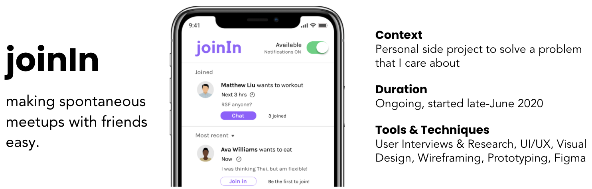

Problem: I often want to do something with friends, but don't know who would be available and interested.
Solution: To address this problem, I designed an app where interested and available friends come to you.
Problem
Research & Analysis
I wanted to see if others faced this problem, and to what extent. I interviewed college students and conducted research on Reddit and Twitter to learn more about user pain points.
I used affinity diagramming to cluster observations from interviews & research into insights.
Here are a few of the user insights:
Ideation
I was interested in designing a solution that I could develop myself. I have some iOS app development experience, so I chose to design an app.
I brainstormed app features & design goals based on the key insights I extracted from the interviews.
I drew my visual design inspiration from apps that are popular among college students today, such as Venmo, Snapchat, and Instagram.
I took note of visual elements that I wanted to replicate in my own design.
Prototyping
Throughout the prototyping process, I asked users for feedback.
With their help, I designed an app with the following features:
I turned sketches into mid-fidelity wireframes focused on layout.
High-Fidelity Design
I created the prototype on Figma using modern, sans-serif fonts, and a simple, playful color scheme.
User Testing
I asked questions and had users think out loud while going through the high-fidelity app. Users found the design to be easy-to-use and intuitive.
Many users were very excited about the idea and saw themselves using it.
Next Steps
After another design iteration where I address additional details, I plan on beginning to code and develop the actual app.
Eventually, I can measure the success of this app using the following metrics:
Takeaways